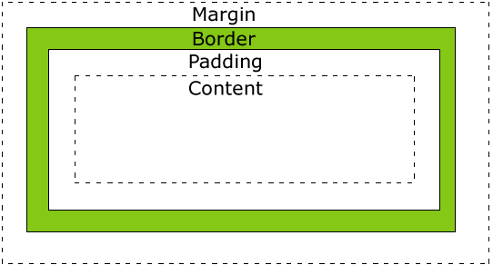
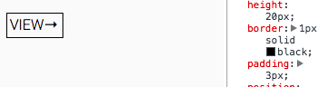
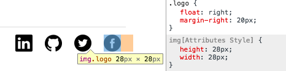

Phase 0: Week 3
Border, Margin, + Padding
October 18th, 2015
"But Shawn, how difficult could this possibly be? Look, I've already seen this diagram!"

Yes, I know, the W3 school's article on the topic sums it up fairly nicely honestly. In case you missed it though, it covers a pretty important concept in CSS referred to as the Box Model, which may make your life easier when implementing a design for your webpage.
The Box Model is a fairly simple concept: all HTML elements can be thought of as boxes. As the above diagram suggests, each elements contains some kind of content, and the perimeter of the element box is defined by the border. The spaces adjacent to the border are defined by the margin and padding. Here are some quick defintiions to get it down:
- Border: The perimeter around the element is referred to as the border, which separates one element from another. This property can be given a few different values, as technically it can be given a designated width, style, and color.
- Padding: The space in between the content and the border. Unlike the border, the padding transparent.
- Margin: The space in between the border and the adjacent element. Similarly to the padding, the margin is also transparent and can only be defined as a length.
So that was the quickest crash course in your life, because you're right, it's a fairly simple concept to visualize! What may be of use to you, are a few examples regarding when to use one of the properties over the other (in particular padding vs. margin, because somtimes when applied to elements, they give you the same visual result). Thus I am going to pull examples straight from this website that might help clear things up! Let's take down padding and border with one go, shall we?
"Why are you showing me a screenshot of your blog/index page?"
Not quite, though it does showcase the button I made without the use of border and padding!! Looks alright, but it might be better to define the button (which is really just a <div>) with a border! Padding also helps the text inside the box from sticking to the sides of the border, which doesn't do anything for the functionality but is much nicer aesthetically.

Pretty sure that looks like a happy button. But what about an example on margin?

So here's my footer in Chrome's Dev Tool. Why did I give it a margin as opposed to a padding? Honestly if I slapped padding-right instead, it wouldn't have changed anything visually. Thinking about the design conceptually however, and going back to the Box Model, I would prefer that the border of the element to surround the logo as close to the actual perimeter of the logo as possible. If you think about it, if padding was applied instead, that's essentially saying "Increase the space in between the content of the element (the logo) and its border (the imaginary box around it)" Thus, the img would be clickable 20px to the right of the logo (or whatever value you gave it). Silly right? It's best to avoid confusing users by giving them invisible portions of your site to click.
Hope that clears up a few things on what is already a fairly simple concept. Hopefully this can help you better visualize a better way to implement a design you were thinking of, or improve the aesthetics of your site!